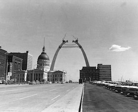

The last stop on our tour is the Gateway Arch, the tallest man-made monument in the Western Hemisphere and the symbol of St. Louis.
00
Quick Facts
630 feet tall
Designed by Eero Saarinen
Completed in 1965
Made from stainless steel
01
The Arch is visible from
most points downtown.
Founded by the National Park Service in 1935 to commemorate Thomas
Jefferson’s vision of a transcontinental United States, the Gateway Arch National Park (formerly known as the “Jefferson National Expansion Memorial”) stretches from the Old Courthouse to the steps overlooking the Mississippi River. In between, the Gateway Arch rises high, a bold monument to the pioneering spirit.

The Arch under construction, June 17, 1964.
02
Imagine seeing the Arch
when it was first unveiled.
Then, and today, the Gateway Arch celebrates the diverse people who shaped
the region and the country. The dreamer, Thomas Jefferson, negotiated the Louisiana Purchase in 1803, doubling the size of the United States. The explorers, Lewis and Clark and their Shoshone guide Sacagawea, scouted the new territory and mapped a route to the Pacific Ocean. The challengers, Dred and Harriet Scott, filed suit at the Old Courthouse for their freedom from slavery, and St. Louis suffragette Virginia Minor sued for women’s right to vote. The artist, architect Eero Saarinen, designed the monument that honors them all.
03
Now, look up.
Do you see it sway?
Built in the form of a weighted catenary arch and resistant to earthquakes, the
Arch was originally described as having "the inevitable quality of the right solution." Construction of the arch itself began on February 12, 1963 with the intention of being completed by the following fall in honor of the city's bicentennial. However, safety checks, funding uncertainties, and legal disputes delayed construction, and the project was not completed until the fall of '65.
Congratulations
You have just travelled to six of some of St. Louis' best and least known art works, totalling over 400 feet in height and located across 23 miles of the city. To see our other tours, click below.